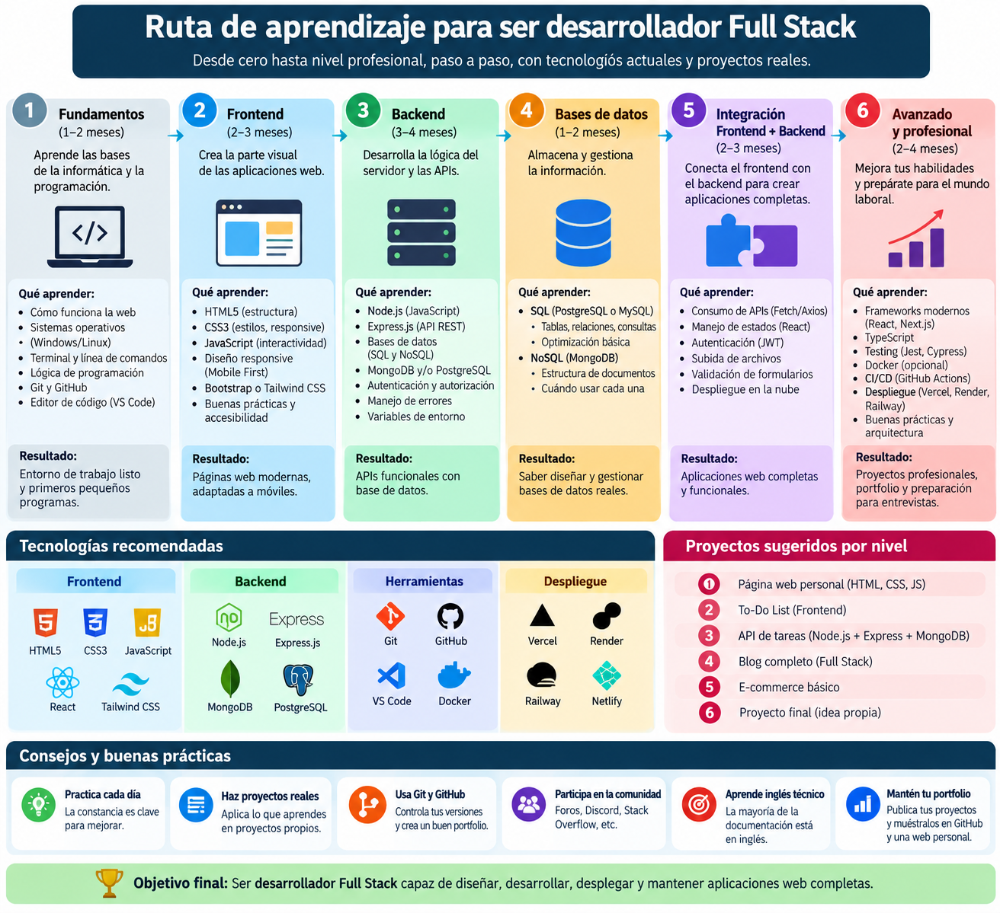

Ruta de aprendizaje para ser desarrollador full stack

Convertirse en desarrollador full stack es un proceso progresivo. El primer paso es aprender a crear la estructura de páginas web con HTML y entender cómo se organiza el contenido.
Después, conviene practicar con proyectos pequeños, aprender cómo se presentan las páginas y explorar cómo se comunican con los servicios que almacenan y procesan información.
La práctica constante ayuda a conectar estos conocimientos. Construir proyectos propios y revisar el trabajo de forma continua permite avanzar y consolidar cada etapa del aprendizaje.